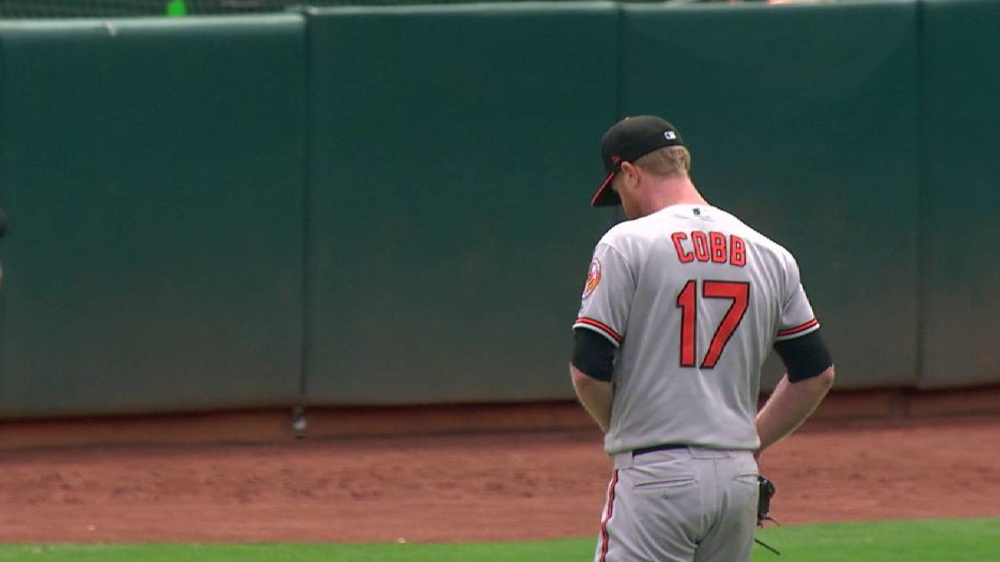

Cobb has 2nd straight strong outing but O's fall
Game Story · May 6, 2018 · MLB.com
After getting a late start to the season due to his belated signing out of free agency, Alex Cobb is finally starting to feel like himself again. And it's starting to show.

Red Sox's 8-game win streak ends in no-no
Game Story · April 22, 2018 · MLB.com
The Red Sox were looking to become the sixth team in the modern era to win 18 of its first 20 games, but instead, history took the form of A's left-hander Sean Manaea in a 3-0 loss to Oakland on Saturday night at the Coliseum.
Stanford annihilates Iowa in 102nd Rose Bowl with historic effort from McCaffrey
Game Story · January 1, 2016 · The Stanford Daily
It only took one play for the Christian McCaffrey show to pick right back up where it started — and this time, on the biggest stage in college football, the entire nation was definitely watching.

Football preview: Offensive line
Analysis · August 25, 2016 · The Stanford Daily
Christian McCaffrey gets all the headlines and magazine covers, and Ryan Burns gets all the media buzz as Stanford’s newly minted starting quarterback, but everyone around The Farm knows the universal truth that football games are, first and foremost, won and lost in the trenches.

Beresford receives ovation 10 years in making
Sidebar · September 10, 2016 · MLB.com
It took James Beresford 1,070 games and 10 seasons in the Minor Leagues to finally get his long-awaited call to the Majors. It only took him one start with the Twins to get his first big league hit.

‘The Catch’: The background and historical context of Owusu’s remarkable snag
Sidebar · October 16, 2015 · The Stanford Daily
Watch out, Odell Beckham, Jr. There’s a new “catch of the century” in town, and it belongs to Stanford junior Francis Owusu.